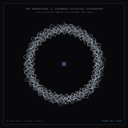

Real-time continuous kinetic plotter clockwork driven by 50Hz continental European electrical grid micro-deviations, atmospheric weather & Restricted Three-Body Problem (RTBP) libration harmonics.

• Baseline Radius: R₀ = 50.0 mm (nominal 50.000 Hz circle).
• Orbit Duration: 1 Decan Hour (DH = 2400s / 40 min), driven in real time or scaled.
• Physical Plotter: Drkota V-plotter (CNC Shield V3, polargraph kinematics).
• Signed Logarithmic Scaling: Magnifies sub-20 mHz micro-drift into visible physical pen excursions without clipping.
• Telemetry Sources: Synchronous optical/audio grid sensors & Netzfrequenz live API.
• 6-Fold Libration Lobes: Earth (Terra), Sun (Sol), Moon (Luna), L2 (Night shadow / JWST / Euclid), L3 (Anti-Earth), L4 & L5 (Trojans), L2M (Halo).
• Harmonic Resonance: Coupled to synodic lunar month & solar azimuth.
• Wind Speed: Generates 36 high-frequency decanic ripple petals.
• Temperature: Induces continuous thermal dilatancy bias (0.15 mm/°C).
• Humidity: Dictates orbital precession density & Guilloché weave.
"Pozdravuje Kof, Techné a Observatoř."
From the independent cybernetics laboratory in Prague: We dedicate this continuous kinetic instrument to the celestial missions stationed at the Earth-Moon & Sun-Earth Lagrange points (Gaia, Euclid, JWST, SOHO, Plato, LISA). Here on the ground, the heartbeat of the synchronous European electrical grid and the atmosphere are woven into the very same libration geometry.